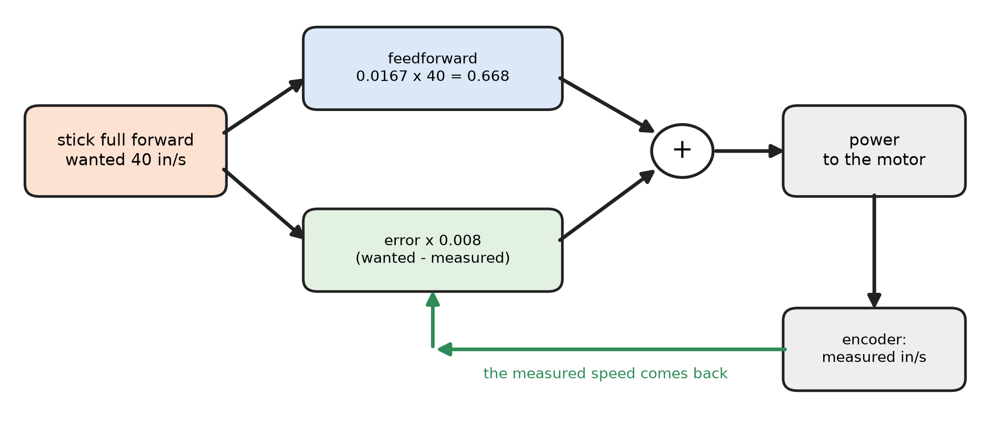

L16: ask the wheels for a speed¶
What you will have when this is done¶
Full stick means 40 in/s, not “full power”. The robot goes that fast on a fresh battery. It goes that fast on a flat one too, because the code measures what the wheels are doing and makes up the difference.
Panels gains three numbers for every wheel. The speed you asked for, the speed the encoder sees, and the power in between.
Before you start¶
L6 is finished, because this commands the wheels the same way.
L3 is finished, because the sticks are still deadbanded.
About 3 m of clear floor, and something gentle to drive up, like a folded mat.
You write in two files: three short blanks in L16VelocityDriveOpMode.java, and one 16-line
blank in LessonsDriveTrain.java.

The loop drawn once round: the stick asking for 40 in/s, the feedforward guess at the power, the encoder’s measured speed coming back, and the error being added in.¶
The steps¶
Step 1: three lines that mean inches, not power¶
TODO 1, 2 and 3 in the OpMode, one line each in the loop.
TODO 1 reads the sticks as a speed. Full forward asks for
MAX_IPS, which is 40 in/s. Full turn asks forMAX_TURN_RADPS, which is pi rad/s, one half turn a second. Deadband each stick at 0.05 and keep the minus signs from L5.TODO 2 works out what each wheel has to do for the robot to move like that.
WheelTargets.forMecanumdoes the arithmetic. The fourth thing it needs isConstants.turnRadiusInches, how far a wheel sits from the middle.TODO 3 hands those four speeds to
drivetrain.setCommandedWheelSpeeds(...), which is what step 2 writes.
You’ll know it worked when the code compiles:
./gradlew :TeamCode:compileDebugJavaWithJavac
The tests cannot pass yet. Watched, with these three lines right and step 2 still blank: every L16
test fails with NullPointerException: Cannot invoke "java.lang.Double.doubleValue()" because the return value of "java.util.Map.get(Object)" is null. That is the test asking the log for a number
nobody published. It is not a crash on the robot, and step 2 is the fix.
Step 2: turn a wanted speed into a power¶
TODO 10 in LessonsDriveTrain.java writes setCommandedWheelSpeeds, and it is the lesson. Every
other door into this drivetrain takes a power. This one takes a speed and gets it, by adding two
answers together for each wheel.
Feedforward is a guess made before anything is measured:
Constants.powerPerInchPerSecond * wanted[i]. Power and speed are roughly proportional, so the guess gets most of the way there on the first loop.Feedback is the correction:
VELOCITY_KP * (wanted[i] - measured[i]), wheremeasuredcomes frommeasuredSpeeds.all(). It is the only part that knows what is really happening.
Put clampToPower(feedforward + feedback) in each wheel’s slot, command the four wheels, and call
publishWheelSpeeds(wanted, measured, powers).
Neither half works alone. The guess is always a little off, and the correction has to build up an error before it does anything, so it lags behind. Together they are how nearly every speed controller works, on a robot or anywhere else.
You’ll know it worked when this prints BUILD SUCCESSFUL:
./gradlew :TeamCode:testDebugUnitTest --tests '*LessonsTest.l16*'
If it didn’t, open the report gradle names. The test asks for 40 in/s with the wheels at rest, so the numbers below are all about one wheel wanting 40 in/s and getting nothing yet.
full stick asks for a speed, in inches per second expected:<40.0> but was:<0.0>. TODO 1 is still three zeros.expected:<40.0> but was:<1.0>. The stick is being handed on as it comes, withoutMAX_IPS. A full stick is 1, and 1 in/s is a slow walk for an ant.expected:<40.0> but was:<-40.0>, andturning counter-clockwise drives the left side backwards. The minus signs are missing from TODO 1.and every wheel must travel at it expected:<40.0> but was:<0.0>. TODO 2 is stillnew double[4], so every wheel is asked for nothing.expected:<0.9878391425450086> but was:<0.6678391425450086>. The feedback is missing. The difference is exactly0.008 * 40, which is the correction that is not being added.expected:<0.9878391425450086> but was:<0.32>, andand the power is the feedforward alone expected:<0.6678391425450086> but was:<0.0>. The feedforward is missing. A wheel already at speed then gets no power at all.expected:<0.9878391425450086> but was:<0.34783914254500864>. The error is the wrong way round.measured - wantedsubtracts the correction instead of adding it.measured speed matches the command expected:<40.0> but was:<0.0>.measuredSpeeds.all()is never read, someasuredis four zeros and the log says the wheels are stopped while they spin.turning counter-clockwise drives the left side backwards, on its own. Two speeds went into each other’s slots.
Mistakes the tests here cannot see
Each test pushes one stick, so anything that only goes wrong when two are mixed gets through. All four of these pass the whole suite, and all four were measured in the harness with the turn stick held for 1 s.
Strafe and turn handed to
forMecanumthe wrong way round. Right answer: the robot turns 120.9 deg in that second. Wrong: it slides 2.9 in sideways and never turns at all.The turn radius left out, 1 in in place of 8 in. The robot turns the right way, 15.1 deg instead of 120.9 deg. Eight times too slow, and the sticks feel dead.
setCommandedWheelsnever called. Nothing moves, and the log looks perfect: 40 in/s asked for and 0.988 power, with the robot standing still. Worth knowing as a shape, not just a bug. A number in a log is what the code decided, not what happened.clampToPowerleft out. Asking for 400 in/s publishes a power of 9.878 instead of 1.000, and the robot drives exactly as far either way, becauseCachedMotorchops it to 1 before the motor sees it. So the clamp is there to keep the log honest.
The deadband can also be left out and everything passes, because every stick the tests push is already outside it.
Step 3: drive it up something¶
Send the code to the robot. Run L16 Velocity Drive and press PLAY. Drive it on the flat first,
then straight up the mat with the stick held at the same place.
You’ll know it worked when the robot slows a little at the foot of the slope and then picks back
up. Watch wheel/frontLeft/target_ips and wheel/frontLeft/actual_ips in Panels. The measured one
dips, then climbs back to the one you asked for, and the power between them rises to do it.
If it didn’t, and the robot is slower than the number says everywhere,
powerPerInchPerSecond is the guess and it is measured on a robot. task.autotune is where it
comes from.
If it didn’t, and turning is the wrong speed while driving straight is right, look at
Constants.turnRadiusInches. It is still 8 in. Your robot may not be. task.l17 measures it.
What has not been done here
Step 3 has not been performed on a robot for this page, and it is the step that shows what the lesson is for. Every message and number above was measured in the test harness, where the fake encoders read zero speed unless a test sets them. So the correction never shrinks there the way it does on carpet.
What you just did¶
A power is an instruction and a speed is a result. Every lesson up to here sent instructions and hoped. This one states the result it wants and closes the loop, which is the difference between code that drives a robot and code that pushes at it.
Both numbers it leans on are measurements of your robot, not constants of nature:
powerPerInchPerSecond and turnRadiusInches. Nothing in this lesson can tell that they are wrong,
which is the whole reason L17 exists.
Where next¶
task.l17 measures the two numbers this lesson trusted: ticks per inch, and the turn radius.